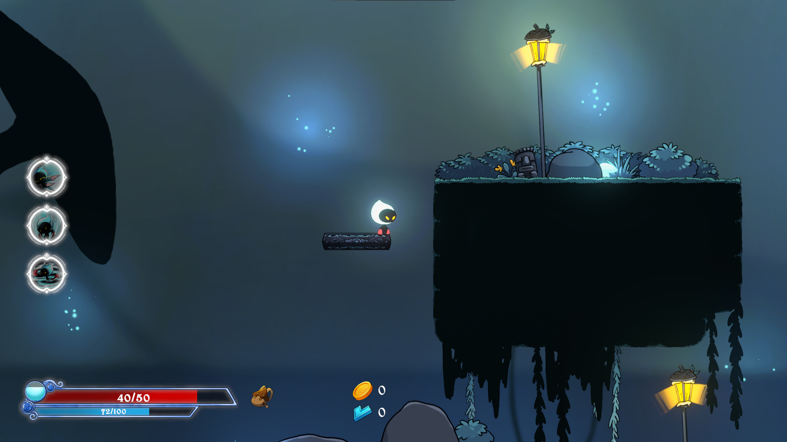

Personal Team of 16 | Gameplay Programmer | Dec 2021 - Apr 2022
A 2D Roguelike platformer game where the player played as one of the Dumian. He has to explore around the dungeon to find his sister while fighting his way against fearsome enemies along the way.
Merrit is a 2D roguelike platformer game where the player has to explore the dungeon looking for his lost sister while fighting fearsome enemies along the way. The game concept was inspired by many famous 2D platformer games such as Hollow Knight, Dead Cell, Ori and the Will of the Wisps, etc.
The game mainly focuses on combat with some puzzles along the way to explore and discover more areas. When the player dies, they will teleport back to the Hub to upgrade / unlock new skills and abilities to get stronger when re-entering the dungeon.

Contributions & Works
Developed and prototyped overall gameplay
Handling most of the gameplay technical issues
Collaborating and helping with other programmers, designers, and artists
This project was meant for competition in Game Talent Showcase 2022 in Thailand. With so, after brain-storming, we decided to go with a game that mainly focuses on 2D platformer lovers and combat roguelike aspects.
Given that this is the first major project I've ever worked on instead of an academic project, with friends and colleagues. Being able to study and produce something distinct from my previous projects has turned into one of my favorite experiences. It excites me because it's an opportunity to work on something I've never done before.
Working on this large-scale team project and assisting another programmer, I am the team's lead programmer with experience in game design. As such, I serve as a technical designer, meeting, and consulting with both teams as part of this enormous team effort to ensure that everyone understands what each element does and how it works.
Ref: Player & Enemies class structure
How It Works & Progress
Programming a 2D platformer isn't difficult, at first glance. The challenging aspect, though, is in how it creates and applies algorithms that align with unique game mechanics and designs. I still lack of proper programming structure system in several areas because of my lack of skills and inexperience working on large projects. Still, I could count it as a challenge to work on new projects that I had never attempted before.
Because there are numerous similarities between the player and enemy systems, I decided to implement the Factory design pattern to work on both of them. also to facilitate the management of changes for both programming and design terms.
I also collaborated closely with designers, discussing many elements that balance game mechanics. Because of this, I make sure the programmer offers the most efficient approaches to ensure designers can quickly adjust and make changes. By sketching all things out in a flowchart and giving the programmer just enough information to comprehend, the designer could assign tasks to the programmers without any issues.
Despite this, it might be challenging to ensure that they follow through with the programmer and designer template. Once it did, though, things ran smoothly and the game progressed more efficiently, which was worth it in the long term. Moreover, both groups could support one another when necessary.